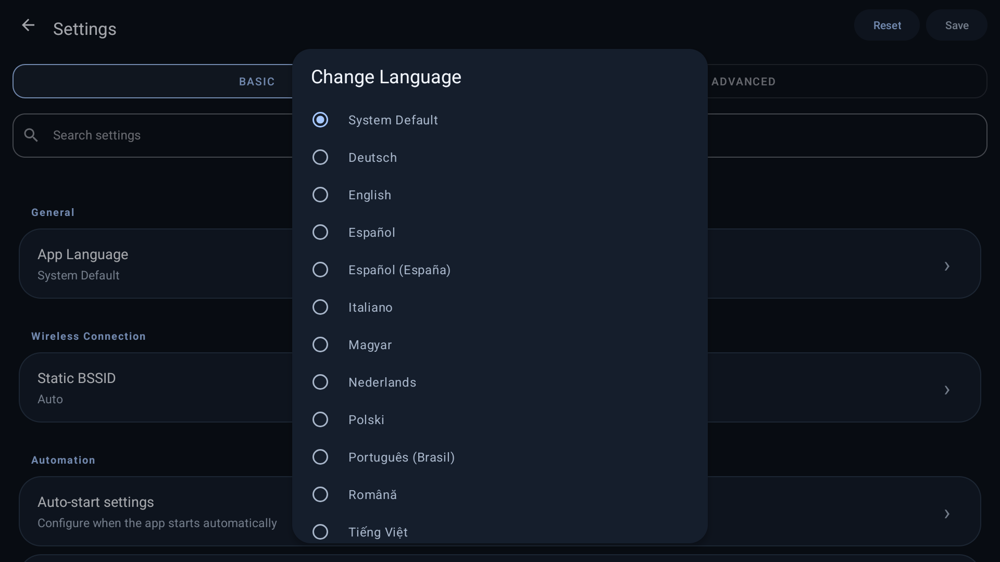

Android Auto.
Right on your BYD.
Your maps, music and conversations on the car display. DiAuto brings wireless Android Auto to compatible BYD DiLink head units, with a simpler interface and smoother scrolling.
No additional phone app. No dongle or external hardware. No root.
Install DiAuto on the car. Your compatible Android phone uses its built-in Android Auto support. An Android phone is still required; this is not Apple CarPlay.
Made for the car


{kind=link}

Install on your car
- Download the APK and install it on the head unit using its permitted APK installation method, or use the ADB guide below. Do this while parked.
- Open DiAuto and complete setup. Grant the Bluetooth, Wi-Fi/location, microphone and other permissions requested for the features you use.
- Pair your Android phone in the car’s Bluetooth settings. Keep Bluetooth and Wi-Fi enabled, then choose Connect phone in DiAuto.
- Prefer a cable? Connect your phone with a USB data cable and choose Connect with USB.
Some DiLink firmware hides the Wi-Fi Direct address. If wireless pairing fails, use the Static BSSID steps in the installation guide.
ADB installation & pairing help ↗What’s new
- Native wireless Android Auto, plus wired USB support.
- Car-friendly home, settings, switches and dialogs.
- Music-through-car-Bluetooth mode to avoid competing media audio focus.
- Smarter Wi-Fi channel selection and bounded frame pacing to reduce scrolling stalls.
Compatibility
Tested on BYD DiLink 5.1 running Android 13, with wireless and physical USB connections. Other head units and firmware versions are not yet verified. Features and performance depend on your phone and car; constant 60 FPS is not promised.
Get release updates
Follow the Telegram channel for new versions and project news.
Updates & signing
This is the first public release with a dedicated signing key. Future public builds will use the same key. Private preview and upstream builds may have a different signature: export your settings before uninstalling a conflicting build. Uninstalling removes its local data.